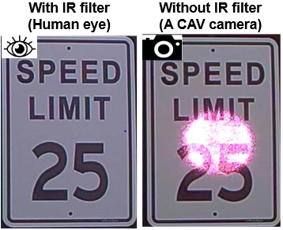
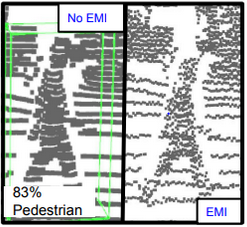
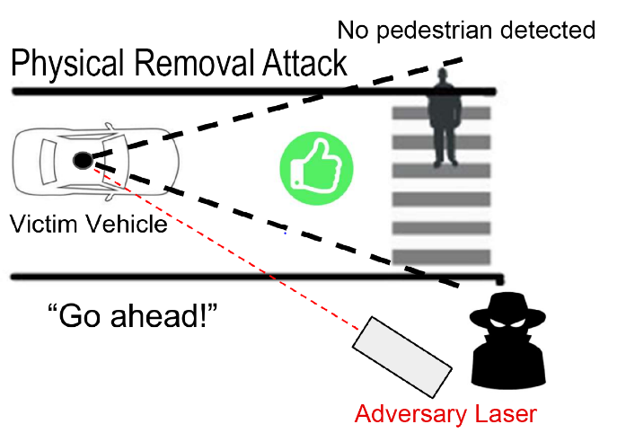

About Me
I am a 3rd year Ph.D. student under the supervision of Dr. Sara Rampazzi at University of Florida. I work in sensor and cyber physical systems security and am a part of CPSec Lab and FICS Research.
My primary research is in securing sensors and cyber-physical systems, particularly in the automotive domain. As part of my research, I study the vulnerabilities in sensors used in autonomous systems and build solutions to mitigate the consequences of these vulnerabilities on the safety of such systems.
Publications
[NDSS '24] Takami Sato*, Sri Hrushikesh Varma Bhupathiraju*, Michael Clifford, Takeshi Sugawara, Qi Alfred Chen, and Sara Rampazzi, "Invisible Reflections: Leveraging Infrared Laser Reflections to Target Traffic Sign Perception." (* denotes co-first).
[IEEE S&P '24] Jennifer Sheldon, Weidong Zhu, Adnan Abdullah, Sri Hrushikesh Varma Bhupathiraju, Takeshi Sugawara, Kevin R. B. Butler, Md Jahidul Islam, and Sara Rampazzi. "AquaSonic: Acoustic Manipulation of Underwater Data Center Operations and Resource Management."
[VehicleSec '24] Sri Hrushikesh Varma Bhupathiraju, Takami Sato, Michael Clifford, Takeshi Sugawara, Qi Alfred Chen, and Sara Rampazzi. "On the Vulnerability of Traffic Light Recognition Systems to Laser Illumination Attacks."
[Med. Biol. '24] Jingxi Weng, Sri Hrushikesh Varma Bhupathiraju, Thomas Samant, Alex Dresner, Jian Wu, Sanjiv S Samant. "Convolutional LSTM model for cine image prediction of abdominal motion."
[ACM WiSec '23] Sri Hrushikesh Varma Bhupathiraju, Jennifer Sheldon, Luke A. Bauer, Vincent Bindschaedler, Takeshi Sugawara, and Sara Rampazzi. "EMI-LiDAR: Uncovering Vulnerabilities of LiDAR Sensors in Autonomous Driving Setting Using Electromagnetic Interference."
[VehicleSec '23] Takami Sato*, Sri Hrushikesh Varma Bhupathiraju*, Michael Clifford, Takeshi Sugawara, Qi Alfred Chen, and Sara Rampazzi. "WIP: Infrared Laser Reflection Attack Against Traffic Sign Recognition Systems.", ETAS Best Short Paper and Qualcomm Demo Award. (* denotes co-first).
[USENIX '23] Yulong Cao, Sri Hrushikesh Varma Bhupathiraju, Pirouz Naghavi, Takeshi Sugawara, Z. Morley Mao and Sara Rampazzi. "You Can't See Me: Physical Removal Attacks on LiDAR-based Autonomous Vehicles Driving Frameworks."
[AAPM '23] Jingxi Weng, Mohammad Anas, Sri Hrushikesh Varma Bhupathiraju, Thomas Samant, Alex Dresner, Jian Wu, Sanjiv S Samant. "Organ-Specific Abdominal Motion Prediction Using Deep Learning with Cine-MRI."
Education
University of Florida, Gainesville
June 2021 - Present
Doctoral Degree in Computer and Information Science and Engineering (Ongoing)
University of Florida, Gainesville
August 2019 - May 2021
Masters in Computer and Information Science and Engineering
BVRIT, Hyderabad
August 2015 - May 2019
Bachelors in Tech., Electronics and Communications Engineering
Research
|  |
Leveraging Infrared Laser Reflections to Target Traffic Sign Perception
We develop an effective physical-world attack that leverages the sensitivity of filterless image sensors and the properties of Infrared Laser Reflections (ILRs), which are invisible to humans. The attack is designed to undermine the traffic sign recognition by inducing misclassification. We formulate the threat model and requirements for an ILR-based traffic sign perception attack to succeed. We evaluate the effectiveness of the attack in real-world driving scenarios.
|
|  |
Vulnerabilities of LiDAR Sensors to Electromagnetic Interference
We expose a new threat in the form of Intentional Electro-Magnetic-Interference (IEMI), which affects the time-of-flight (TOF) circuits that make up modern LiDARs. We show that these vulnerabilities can be exploited to force the AV Perception system to misdetect, misclassify objects, and perceive non-existent obstacles.
|
|  |
Attack on LiDAR-based Autonomous Vehicles Driving Frameworks
We study the reliability of medical devices from a security and safety perspective. In our research we demonstrate that adversaries could remotely manipulate critical health devices using various types of signal injection. We then propose several defenses strategies to mitigate the vulnerabilities.
|